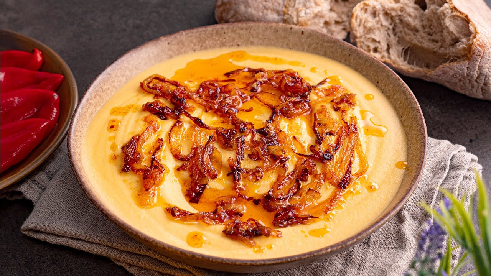

Fasole batută is a traditional Romanian bean paste consisting of mashed white beans combined with minced garlic, oil, bean stock, salt, and pepper. It is typically topped with onions which have been cooked with tomato paste, sugar, and paprika powder.
Meal prep time : 35 minutes
Servings : 4